en version 0.8.3.1
Pour accéder à [Draw]:
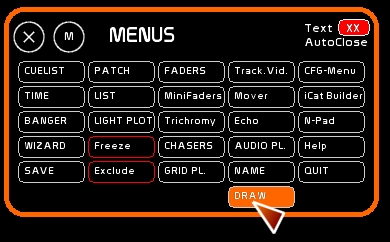
[Draw] est dédié au dessin de mouvements lumineux en direct.
Il est basé sur le principe d'une matrice, dont vous pouvez spécifier le nombre de colonnes et de lignes.
Vous pouvez affecter à chaque case de cette matrice un circuit.
En clickant dans la matrice et en déplaçant la souris, vous allez pouvoir “dessiner” un état lumineux.
Ce genre de module est utile pour :
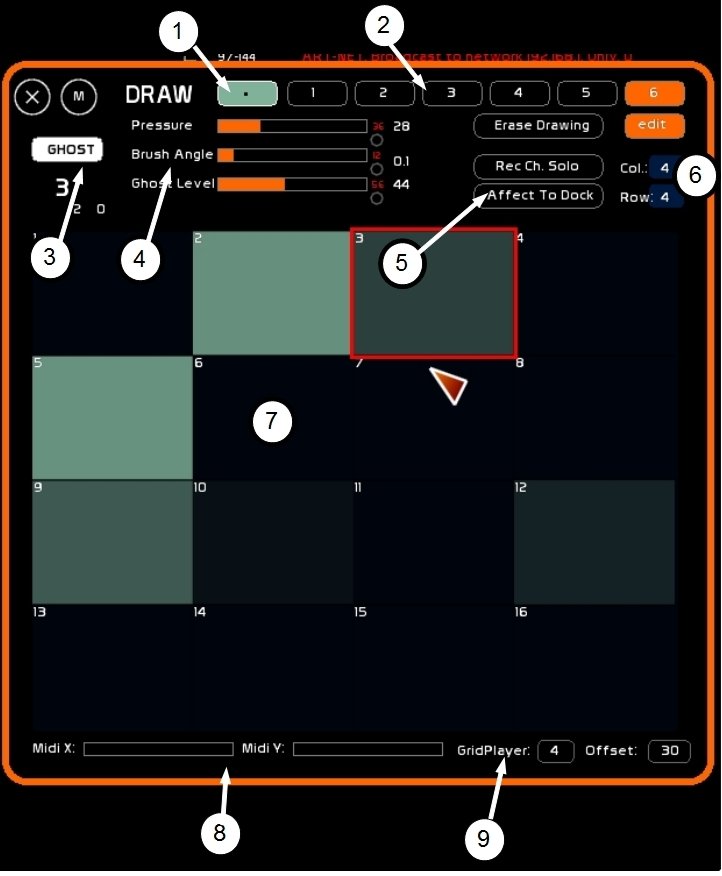
La fenêtre comporte:
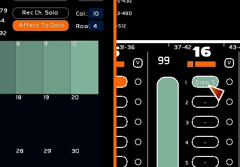
La résolution maximum de la matrice est de 25×20.
Exemples de dispositifs de matrices:
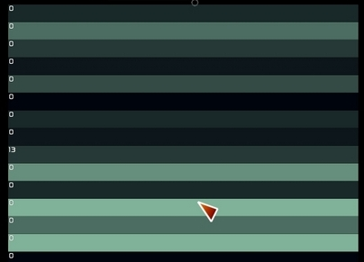
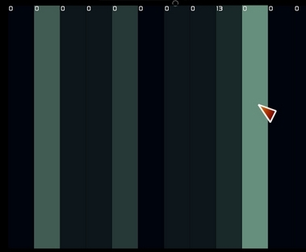
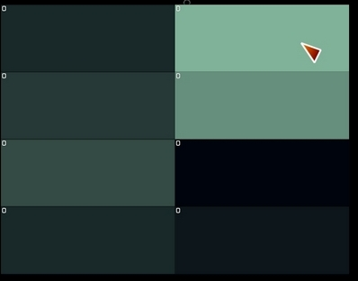
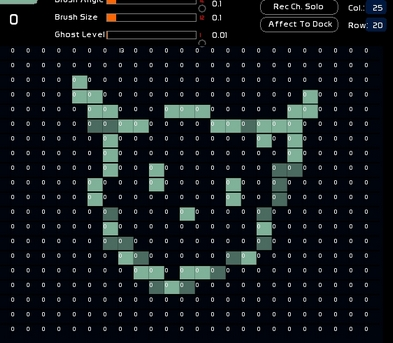
Vous ne pouvez attribuer qu'un seul circuit par case.
Les modes d'affectation sont les suivants:
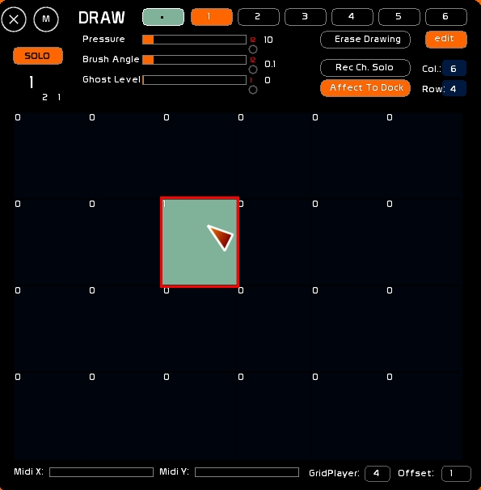
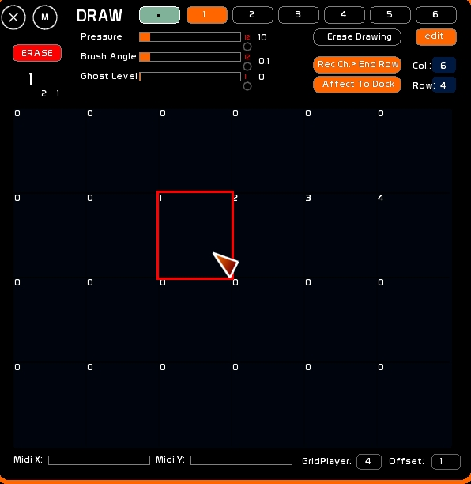
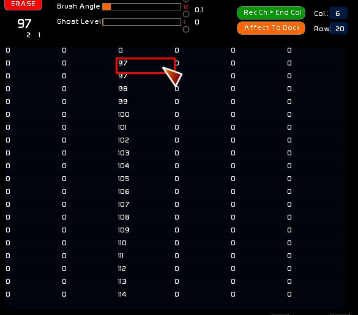
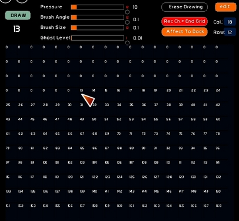
L'outil par défaut est le point. Son impact représente une case.
Cependant vous pouvez utiliser un GridPlayer pour créer vos propres pinceaux, qu'ils soient des états fixes, ou des animations ( oui oui vous avez bien lu… ). Le GridPlayer n'a pas besoin d'être affecté à un Fader.
Quittez le mode Point pour passer en [GPL].
C'est par rapport à cet offset que vous allez construire dans le GridPlayer vos brosses animées.
La case servant d'offset apparait en vert avec le numéro du DrawPreset dans le GridPlayer.
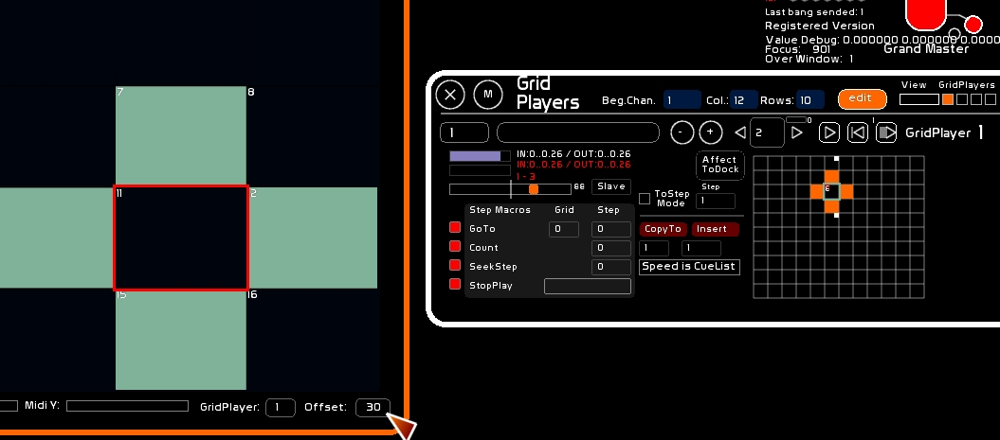
Grâce à [BANGER] vous pourrez appeler et déclencher le GridPlayer servant de brosse à la volée, vous permettant la création d'effets rapides et instantanés. Voir: * Banger, le gestionnaire d'évènements, catégorie GridPlayers.
Le mode de dessin permet de définir comment vous allez influer sur le niveau des cases de la matrice.
Le niveau de pression ( premier potentiomètre en haut) est modulable, il s'exprime de 0.0 à 1.0 et une traduction en pourcentage ou en dmx est affichée sur le côté.
Tant que le click gauche de la souris est appuyé, le niveau des cases survolées par le pinceau va être altéré:
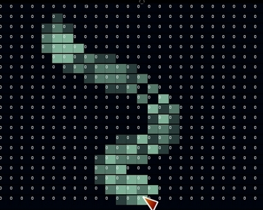
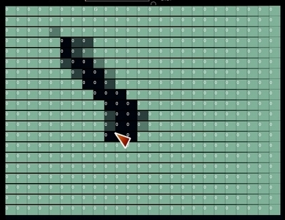
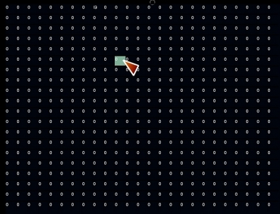
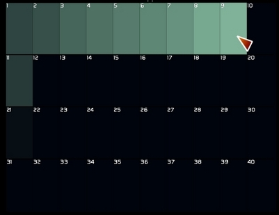
La trace du mouvement s'affiche et disparait tant que le click souris est maintenu, fonction du [Ghost Level].
Si vous êtes sous iOS (iPAD, iPhone, iPod), Fantastick-iCAT vous permet un pilotage unique et multiple, vous donnant accès à plusieurs matrices simultanément, et à une visualisation identique à celle de Draw. Voir: iCat pour iPod/iPhone/iPad, basée sur le logiciel Fantastick
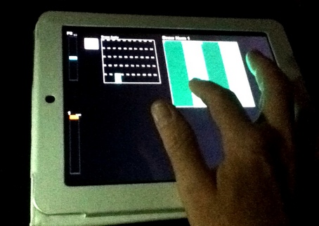
Toutes les commandes, hormis le pointeur souris sont affectables en midi. Voir Configuration Midi et Affectations Midi
Vous pouvez utiliser ce que l'on appelle un xyPad midi pour piloter la position du curseur.
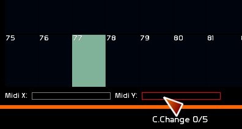
Ce peut être une surface de contrôle classique, ou bien un téléphone type Android ou iPhone muni d'un logiciel midi proposant le tracing Pad. Pour celà affecter le midi X et le midi Y. Si vous utilisez une tablette ou un téléphone, voir: Recevoir le midi d'un appareil émettant en CORE-midi sur le réseau
Le xyPad de TouchOSC:
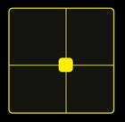
La proposition de xyPad de iCON:
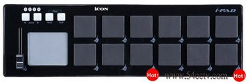
Cocher la pastille sur le côté des 3 potentiomètres pour renvoyer le niveau midi de chaque potentiomètre.